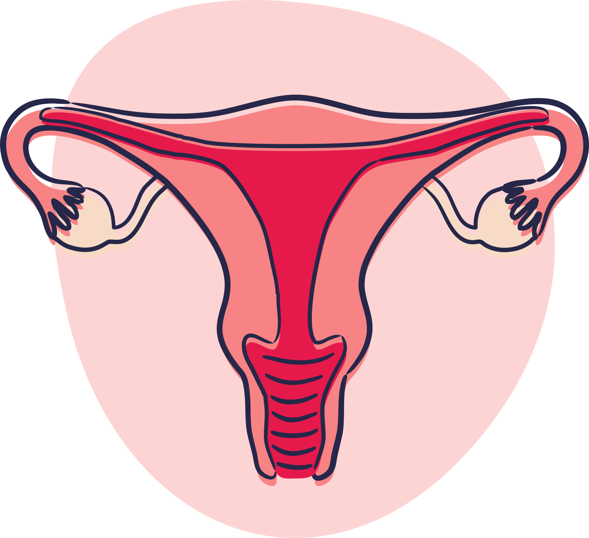

Consulte o serviço de saúde onde você realiza o tratamento e acompanhamento do HIV e converse com a equipe sobre o seu desejo de realizar o planejamento reprodutivo. Você também pode obter orientações com os enfermeiros da unidade básica de saúde do seu bairro.
